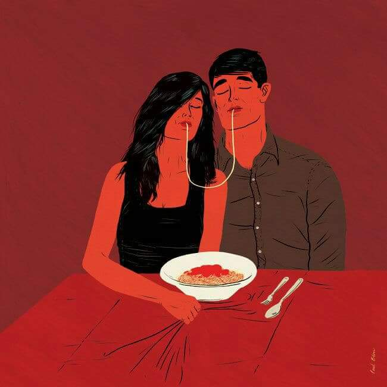

AMAJ - Chương 14 (1)
PHẦN 3: CHIẾN THUẬT SINH TỒN
***

CHƯƠNG 14: KÍCH HOẠT HỆ THỐNG CẢNH BÁO ĐÀN ÔNG TỒI CỦA BẠN
“Một chút cố gắng, và rất nhiều ăn năn,
Và thầm nhủ ‘Tôi sẽ không bao giờ chấp nhận’ – chính là sự thừa nhận.”
LORD BYRON
Vậy là bạn không muốn dính vào những gã đàn ông tồi nữa? Một khi bạn biết rằng mình rất dễ xiêu lòng trước những người đàn ông không tốt cho bạn, hãy xây dựng cho mình một hệ thống cảnh báo đàn ông tồi. Ở đàn ông luôn có những dấu hiệu rõ ràng, hiển nhiên cho thấy rằng anh ta là hoặc có thể là một kẻ tồi tệ. Đối với những người mà bạn có thể dễ dàng nhận ra những dấu hiệu này ở họ, những người có vẻ như say sưa với việc sống theo cái danh hiệu ấy của mình, có lẽ chẳng đáng để bạn ở bên dù vì bất cứ lý do gì. Nhưng những người đàn ông có tiềm năng để trở thành người bạn đời tốt cần nhận được thông điệp ngay từ đầu. Giúp cho họ hiểu được rằng bạn có những tiêu chuẩn cơ bản nhất định trong một mối quan hệ hoàn toàn là sự lựa chọn của bạn.
Nhiều phụ nữ được nuôi dạy với một niềm tin rằng việc duy trì một mối quan hệ là trách nhiệm của họ. Và khi bạn làm điều đó, bạn đã bỏ qua hay hợp lý hóa những dấu hiệu mà đáng lý ra phải là lời cảnh báo cho việc bạn cần thay đổi phản ứng của mình hoặc nên ra đi. Hãy chú ý tới những nỗ lực mà bạn đã bỏ ra để duy trì một mối quan hệ so với nỗ lực đến từ phía anh ta. Bạn không thể có được một mối quan hệ tốt đẹp nếu lúc nào bạn cũng phải là người cố gắng. Khi mà việc cố gắng sửa chữa một mối quan hệ trở thành một lối sống, thì đó là lúc bạn nên dừng lại! Có nghĩa lý gì khi lúc nào cũng phải sống trong trầm cảm và thất vọng kia chứ? Khi mà bạn cảm thấy rằng bạn chẳng đi được đến đâu sau khi đã cố gắng đáp ứng những nhu cầu của anh ta, sau khi đã nói chuyện với anh ta, và trao đi sự ủng hộ của bạn, thì đúng là bạn không đi đến đâu thật đấy.
Đàn ông luôn cho bạn những gợi ý rằng họ là hoặc có thể trở nên tồi tệ nếu bạn không thay đổi thái độ của mình đối với họ. Vậy mà chúng ta thường dùng những lời biện hộ để thanh minh cho những điều khiến ta khó chịu nhằm giữ cho mọi thứ trong một mối quan hệ không lành mạnh được như nguyên trạng. Vâng, “tất cả đàn ông đều tồi cho tới khi chứng minh được điều ngược lại,” nhưng phần lớn bọn họ có khả năng trở thành những người bạn đời tương đối tốt, nếu như bạn đặt ra các giới hạn ngay từ đầu. Sử dụng những lời biện hộ cũ rích để bỏ qua những điều khiến bạn không hạnh phúc sẽ chẳng thể giúp bạn có được hạnh phúc. Đừng chờ đợi cho đến khi mối quan hệ trở nên không tài nào chịu đựng nổi mới bắt đầu cân nhắc tới các lựa chọn có thể khiến anh ta “chứng minh điều ngược lại.” Toni kể với tôi:
Khi nhìn lại mối quan hệ của mình với Jim, tôi tự hỏi tại sao mình lại duy trì nó lâu đến vậy. Tại sao tôi lại nghĩ rằng mình hạnh phúc trong khi ít nhất một nửa quãng thời gian ấy tôi toàn thấy đau khổ? Vâng, tôi đã không muốn thừa nhận điều này. Tôi cứ luôn cho rằng anh ta sẽ thay đổi… rằng anh ta rồi sẽ biết nghĩ cho tôi hơn. Tôi lúc nào cũng có thể viện ra lý do để ở lại bên một tên đàn ông chỉ biết mang đến cho tôi đau đớn tổn thương. Tôi đã bỏ qua quá nhiều… biện minh quá nhiều. Tôi cần phải tìm ra một cách để nhận ra những điều mà tôi không thích ở một người đàn ông ngay từ đầu và quyết định một cách hợp lý rằng tôi có nên ở bên anh ta hay không. Vâng, tôi cảm thấy mình rất thiếu lý trí khi thích một anh chàng. Đó là lý do vì sao mà tôi sẽ làm bất cứ điều gì để khiến cho bản thân mình không nhìn ra được rằng anh ta không hề tốt cho tôi. Có lẽ nếu như tôi không quá sợ việc mất đi anh ta, tôi đã có thể hành động khác, theo một cách để anh ta thấy rằng tôi sẽ không chấp nhận những điều rác rưởi của anh ta. Chúng ta có thể làm được điều này không?
Có, bạn có thể!
Xây Dựng Hệ Thống Cảnh Báo Đàn Ông Tồi
Hệ thống cảnh báo đàn ông tồi của tôi có những cảnh báo được tích hợp ngay từ đầu. Sau vài lần hẹn hò, tôi sẽ nhìn lại và đánh giá:
- Tôi sẽ mất bao nhiêu thời gian và năng lượng cho việc than phiền về ANH TA với bạn bè mình?
- Tôi sẽ mất bao nhiêu giấc ngủ để mà thao thức về những điều khiến tôi khó chịu ở ANH TA?
- Cuộc sống của tôi sẽ bị sao lãng đến nhường nào trong khi tôi cố gắng luận ra mình cần làm gì với ANH TA?
Tôi đặt ra những câu hỏi này theo định kỳ bởi vì chúng thật sự quan trọng. Đôi khi bạn thậm chí còn không nhận thấy những điều tích cực mà bạn nhận được lại nhỏ bé đến nhường nào nếu đem chúng so sánh với những điểm tiêu cực. Hãy tỉnh táo và thật sự chú ý. Khi phụ nữ đến gặp tôi và mong được giúp đỡ trong việc đối phó với một người đàn ông, câu hỏi đầu tiên của tôi luôn là, “Chị có hạnh phúc không?” Họ rất ngạc nhiên với câu hỏi đó, nhưng còn ngạc nhiên hơn nữa khi nghe chính bản thân họ trả lời rằng “không.” Có nghĩa lý gì khi ở bên một người khiến bạn không hạnh phúc thế? Hãy tiếp tục hỏi bản thân câu này khi bạn đọc tiếp phần còn lại của chương.
Có những điểm cần phải lưu ý khi bạn xây dựng một hệ thống cảnh báo đàn ông tồi hiệu quả như là một cơ chế phòng vệ giúp bạn chống lại việc xiêu lòng trước đàn ông tồi. Biết cách nhận biết các dấu hiệu có thể giúp bạn tránh được việc lún vào quá sâu. Bằng việc cho phép mối quan hệ tiến triển chậm rãi hơn, bạn sẽ thấy được ngay từ đầu rằng mình có thể làm gì để ngăn anh ta trở thành một gã tồi. Hãy tìm kiếm các manh mối. Và hãy tin tôi: Nếu chúng có ở đó, thì bạn có thể tìm thấy chúng!
Đừng Viện Lý Do Thay Anh Ta Nữa
Chẳng có lý do nào có thể bào chữa cho sự viện cớ cả. Nhiều người trong chúng ta rất giỏi trong việc tìm kiếm lời biện minh cho những hành động không thể chấp nhận được của đàn ông. Chúng ta đôi khi bỏ qua cho họ những việc khiến ta bị tổn thương hay khó chịu bởi vì ta chỉ tập trung vào những điều mà ta ta thích ở ANH TA và những điều vặt vãnh khiến ta thấy hài lòng. Chúng ta sử dụng lời biện hộ của mình để đối phó với những khía cạnh mà ta không thích. Lời biện hộ chủ yếu dành cho những khía cạnh này là sự viện cớ. Chúng ta viện ra những cái cớ để khiến mình không phải đối mặt với thực tế rằng tại sao anh ta ở hiện tại lại không tốt cho chúng ta. Những lý do này phản ánh sự không sẵn lòng của chúng ta trong việc đối mặt với sự thật về anh ta.
Hãy thực tế. Bạn thường kiếm cớ biện minh thay cho những người đàn ông không đối xử với bạn theo cái cách mà bạn biết, ít nhất là trong thâm tâm, rằng bạn xứng đáng được nhận. Những lý do có thể khiến cho sự thật trở nên dễ chịu nhưng không thể làm nó biến mất. Thay vì thế, chúng khiến bạn mắc kẹt ở một nơi không tốt cho bạn. Bạn sử dụng các lý do bởi vì bạn sợ phải đối mặt với toàn bộ sự thật. Bởi vì việc tránh phải chất vấn ANH TA về hành vi không chấp được hoặc để cho anh ta ra đi sẽ dễ dàng hơn nhiều. Bởi vì bạn không muốn mất đi những gì mà bạn cho là tốt đẹp, bạn hợp lý hóa những điều mà bạn không thích và viện ra lý do trước bản thân và bạn bè mình – những người đang cố gắng giúp bạn nhìn ra sự thật về ANH TA. Bạn tạo ra một mạng lưới những lý lẽ để ở bên một người đàn ông mà tận thâm tâm bạn biết là một gã tồi. Kim thổ lộ với nhóm của chúng tôi:
Bryan là một anh chàng tốt. Anh ấy đang gặp phải quãng thời gian khó khăn. Mẹ anh ấy thì ốm, và anh ấy đang gặp trở ngại trong công việc. Vì vậy mà anh ấy không quan tâm tới tôi nhiều như trước đây. Anh ấy thường hay quát tháo tôi. Nhưng đó là bởi vì anh ấy đang bị stress quá. Anh ấy không chịu nghe tôi nói. Nhưng anh ấy lại suy nghĩ quá nhiều. Anh ấy tới khi anh ấy muốn, mà không hề gọi điện trước. Khi tôi rủ anh ấy tới nhà, anh thường từ chối. Tôi đoán là phần lớn thời gian tôi không hạnh phúc, nhưng tôi yêu anh ấy. Anh ấy không thể thay đổi cách đối xử với tôi được. Anh ấy cũng có vấn đề của riêng mình mà.
Rất nhiều thành viên trong nhóm này cảm thấy bực mình khi Kim viện thêm nhiều lý do nữa nhằm bào chữa cho hành vi của Bryan. Tôi đề nghị cô ấy hãy ghi lại cách Bryan đối xử với những người khác. Có phải anh ta cũng hay mất bình tĩnh với bạn bè và gia đình mình không? Anh ta có xuất hiện khi họ cần anh ta hay không? Kim đến lớp trong tuần tiếp theo và rất yên lặng. Cô nói với chúng tôi rằng Bryan đối xử với những người khác tốt hơn nhiều:
Hôm thứ Bảy vừa rồi Bryan cứ giục giã tôi bởi vì bạn anh ấy tổ chức một bữa tiệc thịt nướng và anh ấy hứa sẽ đến sớm để phụ một tay. Tôi nhắc anh ấy rằng vài tuần trước anh ấy đã hứa sẽ thay pin cho chiếc xe của tôi. Anh ấy cằn nhằn và viện ra vài cái lý do và lôi tôi vào trong xe của anh ấy. Trên suốt quãng đường anh ấy cứ ra vẻ khó chịu với tôi. Nhưng với bạn bè của anh anh ấy, lúc nào anh ấy cũng cười cả.
Trên đường về nhà, tôi hỏi tại sao anh ấy lại trút các vấn đề của mình lên đầu tôi, và ngay lập tức anh ấy lại chặn họng tôi. Tôi cuối cùng cũng nhận ra tôi là kẻ bung xung của anh ta và anh ta có thể làm những điều đúng đắn khi anh ta muốn. Tôi đoán là rốt cuộc tôi cũng phải dừng việc này lại. Tôi phải thay đổi thái độ của mình. Anh ta nhận ra điều đó bởi vì anh ta đang cố gắng hơn. Có lẽ anh ta có thể dừng việc trở thành một gã tồi lại. Có thể lúc này đã quá muộn bởi vì bây giờ tôi đã mở mắt ra rồi, tôi không còn thích con người của anh ta nữa.
Kim hiểu ra rằng khi cô ấy bỏ đi những cái cớ, cô có thể nhận thấy Bryan đã trút những vấn đề của mình lên đầu cô một cách có chọn lọc, bởi vì cô cho phép anh ta làm như vậy. Các lý do đã ngăn cô khỏi việc buộc anh ta phải thôi trút bỏ các vấn đề của mình lên trên đầu cô. Dĩ nhiên là bạn sẽ muốn trở thành nguồn động viên cho người đàn ông mà bạn yêu, nhưng nó cần phải diễn ra theo một cách lành mạnh. Bạn không thể trở thành nạn nhân bị ngược đãi của anh ta chỉ bởi vì cuộc đời không đối xử công bằng với anh ta. Để có thể chăm lo cho chính bản thân mình, bạn cần phải chấp nhận rằng BẠN KHÔNG PHẢI CHỊU TRÁCH NHIỆM CHO NHỮNG VẤN ĐỀ CỦA ANH TA! Chấm hết!
Hãy nhớ rằng, đàn ông rất dễ bị chiều hư và có lẽ đã quen với việc được người khác châm trước cho họ về cách hành xử của mình. Tôi cũng gặp phải một tình huống tương tự như vậy với gã bạn trai cũ của tôi. Anh ta nổi tiếng là người hay đưa ra những nhận xét đầy chế nhạo, khó chịu về bạn bè mình. Một ngày nọ, anh ta cũng làm vậy với tôi. Tôi kể điều này với một người bạn thân của anh ta và cô ấy nói rằng đó chỉ là phong cách của anh ta mà thôi. Mọi người đều biết rằng anh ta luôn có những nhận xét kiểu đó và mặc kệ chúng. Họ đều viện cớ thay cho anh ta, nói rằng anh ta không thể làm khác được. Tôi gọi cho anh ta và nói rằng mặc dù mọi người đều chấp nhận những gì được coi là “phong cách của anh,” nhưng mà tôi thì không. Khi tôi nói với anh ta rằng tôi không muốn gặp anh ta nữa nếu anh ta cứ tiếp tục như vậy, anh ta cảm thấy khó chịu, xin lỗi, và hứa rằng sẽ không bao giờ làm vậy nữa. Ở anh ta còn có những vấn đề khác, nhưng anh ta không còn chế nhạo tôi nữa. Điều đó chứng tỏ rằng anh ta có thể sửa đổi nét tính cách ấy của mình nếu muốn.
Bạn có thể đánh cược mối quan hệ của mình bằng việc nhìn nhận một người đàn ông một cách khách quan và ngừng bám vào những điều tốt đẹp mà anh ta làm như một cách để bao biện cho những việc tồi tệ. Bạn có thể lựa chọn ngừng việc viện cớ lại. Thay vì vậy hãy để anh ta tự chịu trách nhiệm trước những hành vi không thể tha thứ được của mình! Bạn không thể để cho những phẩm chất tốt đẹp của anh ta làm lu mờ tầm mắt của bạn và gồng mình chịu đựng những tổn thương mà anh ta gây ra cho bạn. Khi để cho những ký ức tốt đẹp cân bằng với những điều khiến bạn bực mình hay đau lòng, bạn đang tự hạ thấp mình đấy.
Hãy thận trong với những lời bao biện mà bạn dành cho anh ta. Hãy viết chúng ra. Hãy tự hỏi bản thân bạn rằng liệu mỗi một lý do này có thể biện minh một cách hợp tình hợp lý cho những cảm xúc tiêu cực mà anh ta gây ra cho bạn hay không. Nếu như nó là một điều xảy ra thường xuyên, hãy cẩn thận. Và mỗi khi bạn sử dụng sự bao biện này với bạn bè của mình, hãy cẩn trọng gấp đôi. Hãy ngừng ngay việc viện cớ lại và hãy nhìn nhận lại con người anh ta. Chỉ có lối cư xử tôn trọng mới đáng được chấp nhận! Ngay cả khi anh ta có một trái tim nhân hậu đi chăng nữa, bạn cũng không nên trả giá cho những vấn đề của anh ta.
Trong Tình Yêu, Nói Xin Lỗi Suông Là Không Đủ
Nếu bạn cho phép đàn ông dễ dàng viện lý do cho những hành vi tồi tệ của họ, thì tại sao họ lại không tận dụng cơ hội này? Tim nói với tôi:
Tôi nhận thấy mình thường viện lý do mỗi khi làm sai điều gì đó với bạn gái của mình. Họ thường chấp nhận chúng dễ dàng! Dù tôi có làm gì đi chăng nữa, tôi hầu như đều có thể vượt qua chót lọt với một câu chuyện hay ho. Tất cả chúng ta đều có vấn đề, vì thế mà tôi luôn có thể nghĩ ra một điều gì đó để nói với cô ấy… áp lực công việc… mẹ tôi cần tôi… tôi vẫn chưa thể vượt qua mối tình đầy tổn thương trước đó và cần cô ấy chịu đựng cùng tôi.
Liệu phụ nữ có thật sự tin những điều này? Tôi không bao giờ để phụ nữ nói với tôi về điều đó. Một lời xin lỗi dễ thương thường giúp tôi thoát nạn.
Nhiều đàn ông cảm thấy rằng họ có thể làm bất cứ điều gì gây tổn thương, xấu xa, hay đích thực sai rành rành với bạn, chỉ cần sau đó họ nói rằng “Anh xin lỗi.” Nhưng việc nói “Anh xin lỗi” không thể bào chữa cho hành vi xấu xa. Khi một ai đó tổn thương bạn, liệu câu “Tôi xin lỗi” có xóa được nỗi đau kia không? Với tôi thì không. Thực tế là hầu hết mọi người sẽ hối hận sau khi họ làm tổn thương bạn. Phản ứng của bạn phải khiến cho họ cảm thấy đủ hối lỗi để mà nhận ra rằng tốt hơn hết là họ phải đối xử tử tế với bạn, còn không thì sẽ mất bạn. Chấm hết. Không thêm cơ hội nào nữa cả. Tôi từng có một anh bạn trai cứ cho rằng tôi có nghĩa vụ phải tha thứ cho mọi việc anh ta làm, miễn là anh ta nói câu “anh xin lỗi.” Ban đầu tôi cũng tha thứ cho anh ta, cho tới khi tôi nhìn ra rằng những hành động tốt đẹp không bao giờ đi kèm với lời xin lỗi. Anh ta quên gọi điện cho tôi. “Anh xin lỗi.” Anh ta mất bình tĩnh và nhảy vào họng tôi vì một chuyện vặt vãnh nào đó sau một ngày làm việc mệt mỏi. “Anh xin lỗi.” Anh ta không đến như đã hẹn. “Anh xin lỗi.” Thật may là tôi đã biết đủ vào lúc đó để hiểu ra rằng điều này là không chấp nhận được. Khi tôi bảo anh ta đừng gọi cho tôi nữa, tôi không hề nói với anh ta rằng “Em xin lỗi.”
Hãy nhớ kỹ điều này: Bạn không cần phải chịu trách nhiệm trước những thiếu sót, vấn đề, hay những yếu tố khác của đàn ông mà bạn sử dụng để bao biện cho anh ta. Hãy ngừng nói những lời đại loại như “Anh ấy quả có làm những việc khiến tôi bị tổn thương, nhưng…” Bạn có thể nói gì để hoàn tất lời biện hộ này và khiến anh ta điều chỉnh lại hành vi của mình? Có thể bạn sẽ nói rằng anh ta có ý tốt? Hay chẳng qua là tại vì anh ta cảm thấy bất an? Những lý do kiểu ấy không thể thay đổi mọi thứ được! Chỉ bởi vì ai cũng có vấn đề của riêng mình thì cũng không có nghĩa là họ có quyền trút nó lên đầu bạn. Tại sao bạn lại chấp nhận gánh chịu những vấn đề của họ kia chứ?
Đàn ông đã học được cách viện đến những vấn đề của mình như một lý do để không làm điều đúng đắn. Nếu như họ có trách nhiệm, họ cần phải tìm ra cách dễ chấp nhận hơn để đối xử với bạn. Đặt gánh nặng của anh ta lên vai bạn là không chấp nhận được. Hãy để anh ta tháo nó ra và cất nó đi, hoặc là anh ta cứ việc mang nó theo trong một hành trình khác với một ai đó khác!
"Nhưng Anh Ấy Có Vẻ Tử Tế"
Lúc nào tôi cũng thấy các chị em nói câu này. Đó là một cái cớ nhẹ nhàng nhằm hợp lý hóa hành vi tiêu cực của một anh chàng “tử tế.” Đã bao giờ mẹ hay dì của bạn cố gắng mai mối một ai đó cho bạn chưa? Khi bạn hỏi rằng “Anh ta như thế nào?” và câu trả lời thường sẽ là “Cậu ấy là người tử tế.” Điều đó thường có nghĩa là anh ta một người chất phác, thiếu cá tính, nhưng có lối cư xử khiến cho mẹ của bạn hài lòng. Đối với người làm mai mà nói, từ “tử tế” ở đây được dùng như một lời bào chữa cho tất cả những khiếm khuyết khác. Và nhiều người trong số các bạn sử dụng lý do này để biện minh cho hành vi không tử tế của một “anh chàng tử tế.”
“Tử tế” là một từ chung chung mà mọi người thường sử dụng để giải thích cho rất nhiều việc. Một anh chàng được coi là “tử tế” thường được ‘cấp phép’ để có thể thoát thân khỏi những hành vi không được tử tế. Xã hội dạy chúng ta rằng nếu một ai đó có vẻ ngoài lịch sự và tốt, thì anh ta phải là một người “tử tế.” Gã bạn trai tồi trước đây của tôi rất tử tế, ngoại trừ những lúc anh ta tổn thương tôi. Tôi vẫn không tin rằng anh ta cố ý, nhưng những vấn đề của anh ta đã khiến anh ta làm những việc không hề đúng. Mục đích của anh ta là tốt, nhưng tôi buộc phải để lại anh ta một mình với những ý định của anh ta.
Trong quá khứ, tôi cho rằng đàn ông là tử tế bởi vì họ biết cách cư xử và chu đáo khi mà họ có thể. Họ nói chuyện đầy ngọt ngào và có thể sẽ có mặt khi tôi cần, nhưng đồng thời họ cũng làm những việc không tốt với tôi. Thật là khó hiểu khi ta bị đối xử tệ hại bởi một anh chàng “tử tế.” Sami giải thích:
Keaton thực sự là một anh chàng tử tế. Tôi biết trái tim anh ấy rất thiện lương và anh ấy có ý tốt, nhưng anh ấy thường làm những điều khiến tôi đau đớn. Tôi biết anh ấy không cố ý … chẳng qua là anh ấy có những vấn đề cá nhân mà thôi. Nhưng nó chẳng dễ chịu chút nào. Mọi người đều nói rằng tôi thật may mắn khi gặp được một anh chàng như thế. Nhưng tôi thấy khó hiểu quá. Anh ấy tốt, nhưng đôi khi rất khó chịu… rồi sau đó lại xin lỗi một cách tử tế. Anh ấy cứ lúc nóng lúc lạnh. Những tín hiệu mà anh ấy đưa ra rất hỗn loạn. Tôi cảm thấy quá đủ với anh ấy… nhưng cũng lại cảm thấy có lỗi nếu đưa ra quyết định, bởi vì tôi biết rằng về cơ bản anh ấy là một người tốt. Đôi khi tôi tự hỏi cái từ tử tế ấy có nghĩa là gì.
Chúng ta thường nhận định một anh chàng là tử tế bởi vì những ý định của anh ta là thiện ý. Vì thế khi anh ta không gọi điện để báo rằng anh ta sẽ đến trễ một tiếng – anh ta đã có ý gọi. Vì thế khi anh ta không giữ lời hứa sẽ dành trọn cuối tuần bên bạn – anh ta đã thực sự muốn vậy, nhưng chỉ là không thể làm được. Vì thế khi mà anh ta đánh bạn hết lần này đến lần khác – anh ta không muốn vậy, chỉ là hơi nóng tính mà thôi. Sau đó anh ta sẽ cảm thấy tồi tệ về hành vi của mình. Vì thế mà đôi khi anh ta mất bình tĩnh một cách phi lý – nhưng hầu hết thời gian anh ta vô cùng tuyệt vời. Những tín hiệu trái ngược này nói lên điều gì? Bạn cần phải nhìn nhận lại “tử tế” có nghĩa là gì để bạn không sử dụng nó như là một cái cớ.
Hãy hợp nhất mặt “tử tế” với mặt không tuân thủ lời nói của anh ta lại. Hãy xem xem một anh chàng “tử tế” có thể thường xuyên không nhất quán như thế nào. Một người đàn ông chỉ tốt đẹp ở một mức độ nào đó (thường là trong lời nói) thôi thì chưa đủ, bởi vì anh ta luôn khiến bạn đau lòng ở những điểm khác (thường là trong hành động). Không có ai là hoàn hảo cả, nhưng cái giá của việc ở bên một anh chàng “tử tế” không nên là tâm trạng thường xuyên tồi tệ của bạn. Như thế thì chẳng tốt tí nào cả!
"Anh Ấy Có Thể Sẽ Rất Tuyệt Vời, Nếu Mà..."
Bạn gặp một anh chàng dí dỏm và dễ thương, người sở hữu nhiều phẩm chất mà bạn mong muốn ở một người bạn đời. Điều tốt đẹp nhất là anh ấy vẫn còn độc thân và anh ấy thích bạn. Vâng, bạn nghĩ, “Có những điểm mà mình không thích ở anh ấy, nhưng cứ đợi xem thế nào đã. Khi mà anh ấy yêu mình, anh ấy sẽ muốn trao cho mình những điều mình muốn.” Bạn quyết định rằng anh ấy thật thông minh, nên có lẽ anh ấy sẽ quay lại trường học và có thể sẽ kiếm được thu nhập kha khá. Hoặc, anh ấy thích làm mọi thứ theo cách của mình, nên có lẽ anh ấy sẽ chóng rời khỏi nhà mẹ và dọn ra sống riêng. Hoặc, có thể lúc này anh ấy thật vô trách nhiệm, nhưng anh ấy sẽ là một người chồng và người cha tuyệt vời khi mà anh ấy nhìn thấy hai bạn có thể hạnh phúc bên nhau đến nhường nào. Thật là nhảm nhí! Mọi việc không diễn ra như vậy đâu.
Tôi đã từng nói rằng bạn không thể thay đổi đàn ông, vì vậy hãy nhớ lấy điều này. Mong muốn xây dựng một mối quan hệ với người đàn ông của bạn nên dựa vào việc con người hiện tại của anh ta như thế nào. Mơ tưởng đến những điều tốt đẹp trong khi vẽ ra một kế hoạch chi tiết về việc bạn sẽ cải tạo anh ta như thế nào sẽ không mang lại kết quả gì. Bạn buộc phải chấp nhận đàn ông như những gì họ vốn có! Đôi khi khi mà bạn thay đổi phản ứng của mình trước hành vi của họ, bạn có thể có được những gì mình muốn. Nhưng việc tự che mờ mắt mình với những hình ảnh tiềm năng về anh ta có thể khiến bạn bỏ qua những dấu hiệu tiêu cực. Những tầm nhìn này có thể khiến bạn tiếp tục cố gắng ‘hoàn thiện’ ANH ẤY, trong khi lại lấy đi nguồn năng lượng từ hạnh phúc của chính bản thân bạn. Jennifer kể với tôi:
Jeff rất vui tính. Chúng tôi có nhiều điểm chung đến nỗi sẽ thật đáng hổ thẹn nếu bỏ qua cảm giác mà chúng tôi dành cho nhau. Từ khi tôi quen anh ấy, anh ấy thường làm mấy công việc tạm bợ, nhưng tôi biết là anh ấy rất thông minh. Khi mà anh ấy sống cho ra hồn, tôi chắc chắn rằng anh ấy sẽ kiếm được một công việc tốt. Tôi phải chịu rất nhiều áp lực khi phải rời xa anh ấy bởi vì anh ấy rất vô trách nhiệm. Nhưng nếu như các bạn tôi nghe được những ý tưởng… những giấc mơ của anh ấy, họ sẽ biết rằng có điều gì đó hơn thế ở con người anh ấy. Đôi khi anh ấy không xuất hiện trong một thời gian, nhưng tôi biết là anh ấy cần không gian để đối mặt với vấn đề của mình. Tôi luôn cố gắng giúp anh ấy bằng cách nấu ăn cho anh ấy và đôi khi cho anh ấy vay tiền. Tôi không thích phần đó lắm, nhưng tôi muốn tin tưởng anh ấy. Giá mà anh ấy có thể thấy được tiềm năng mà tôi nhìn thấy ở anh ấy.
Nếu mà… Ước mơ và những ý định tốt đẹp không làm nên một mối quan hệ tốt đẹp. Bạn có thể tìm thấy sức mạnh để lùi lại nếu bạn nhìn thấy những hành vi không chấp nhận được. Hãy cảnh giác và đừng cho phép bản thân bị u mê để mà bạn có thể nhìn xa hơn những gì sẽ khiến mình không hạnh phúc. Bạn không thể xây dựng mối quan hệ của mình dựa trên những gì mà bạn kỳ vọng anh ta sẽ trở thành. Dĩ nhiên, bạn không cần phải thích mọi điều về anh ta. Anh ta cũng là con người và bạn không thể lúc nào cũng có được mọi thứ theo ý của mình. Nhưng bạn biết những việc đàn ông làm (và không làm) sẽ khiến bạn tiếp tục tức giận và không vui. Nếu bạn loại bỏ được tấm màn che mắt mình, bạn có thể sẽ nhận ra điều gì là không chấp nhận được. Bạn biết bạn không thể chịu đựng được điều gì, điều gì sẽ làm cho bạn phát điên, điều gì sẽ lấy đi của bạn quá nhiều năng lượng khi cố gắng thay đổi, điều gì sẽ lãng phí thời gian của bạn khi mà cứ phải ca thán về nó. Lựa chọn duy nhất của bạn là vứt cái kế hoạch chi tiết kia đi và hãy học cách chung sống với một người đàn ông theo đúng con người thật của anh ta, hoặc là rời đi.
"Chị Có Biết Ngoài Kia Có Những Gì Không?"
Nhiều người trong số các bạn ở trong một mối quan hệ không thật sự hạnh phúc với một người đàn ông bởi vì bạn cảm thấy rằng có còn hơn không. Tôi thường nghe thấy điều này từ các chị em, và trong quá khứ tôi cũng tự nói thế với mình không biết bao nhiêu lần. Tôi từng hẹn hò với một anh chàng trẻ hơn mình nhiều tuổi, hấp dẫn, rất đẹp trai, nhưng lại phiền phức đến mức tôi quyết định dừng lại với anh ta. Tôi kể với một nữ đồng nghiệp về quyết định của mình, và cô ấy tỏ rất sốc, nói rằng, “Làm sao mà cậu lại có thể bỏ qua một anh chàng dễ thương như vậy được nhỉ? Rồi xem cậu có thể khiến anh ấy quay lại hay không.” Khi tôi nhắc nhở cô ấy về những nỗi đau mà anh ta đã gây ra cho tôi, cô ấy vẫn giữ nguyên lập trường của mình, và nói rằng, “Cậu có biết ngoài kia có những gì không? Ít nhất thì anh ta cũng đẹp trai. Hãy chấp nhận những vấn đề của anh ấy và giữ chân anh ấy. Cậu đúng là đồ dở hơi mới đi bỏ anh ấy, cho dù anh ấy có điên đi chăng nữa.” Cô ấy làm tôi sợ phát khiếp!
Không phải tất cả những người đàn ông mà bạn lựa chọn ở bên đều là những con người kinh khủng hoặc là kẻ thần kinh. Khi mà dường như hầu hết những người đàn ông độc thân đều có quá nhiều vấn đề để bạn có thể cân nhắc lựa chọn, thì cái con người “không-tệ-lắm” mà bạn có được có vẻ cũng đáng để nắm giữ. Vì thế mà bạn thà thỏa hiệp với một chút “tạm được” ở con người anh còn hơn là phải chịu rủi ro của việc không có gì trong tay cả. Hãy xem xét trường hợp của Elizabeth, người đã ở bên Leonard được bốn năm. Anh ta có một công việc đòi hỏi anh ta phải đi lại nhiều, thường là không được báo trước. Elizabeth luôn cố gắng giữ tất cả thời gian rảnh của mình cho anh ta, phòng trường hợp anh ta sẽ gọi:
Tôi phát điên lên được vì Leonard. Anh ấy rất đẹp trai … thân hình hoàn hảo, mà là một điều rất quan trọng với tôi. Anh ấy gặp tôi khi có thể, mà thường là không phải mỗi tuần một lần. Chúng tôi thường có một buổi tối tuyệt vời, và anh ấy rời đi vào buổi sáng hôm sau. Tôi sẵn sàng xin chết để có thêm thời gian bên anh ấy và thấy rất vui khi thỉnh thoảng anh ấy không phải vội vã rời đi vào ngày hôm sau. Leonard luôn có rất nhiều việc phải làm.
Sau bốn năm, anh ấy vẫn không cho tôi được nhiều những gì tôi muốn ở một mối quan hệ, nhưng tôi không buông được. Tôi đã cố gắng ra ngoài găp gỡ người mới, nhưng việc ấy thật mệt mỏi. Không, thực sự thì hầu hết thời gian tôi không thấy hạnh phúc. Tôi cho rằng tôi vẫn cứ hy vọng anh ấy sẽ cho tôi được nhiều hơn. Nhưng tôi không thể buông tay. Tôi không nói một lời nào bởi vì tôi sợ anh ấy sẽ bỏ đi và tôi chẳng còn gì. Chất lượng của những người đàn ông độc thân còn lại rất tệ. Ít nhất thì tôi cũng có được một chàng đẹp trai. Như thế thì vẫn tốt hơn là không có gì cả, đúng không?
Có thật thế không?
Comments